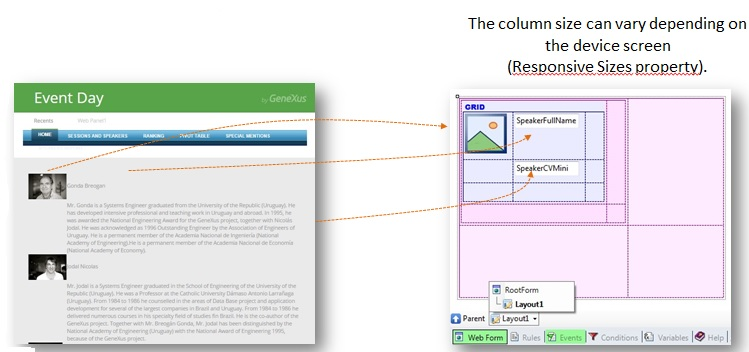

To achieve a Responsive Web Application, and an optimal viewing experience, you must use the Web Abstract Editor.
The main purpose of the Web Abstract editor is to assist in the design of Responsive Web Applications. It is based on an Abstract layout where the designer can drag and drop any control over a Responsive Table.
The controls supported are the same controls supported by the HTML Editor: Common Controls and User Controls.
In addition, other controls can be used. They are as follows:
The control used in GeneXus to design a Responsive web application is called Responsive Table and it is the main control of the Abstract layout.

Frameworks like BootStrap provide a container that they call Grid. It is similar to a table, but it adapts to the width of the screen in order to allow for a Responsive web design. Therefore, this container makes it possible to display the information in a way that is readable to the user regardless of the device or screen size.
The GeneXus Responsive Table is generated as a Bootstrap fluid grid. Unlike the traditional Table control, responsive tables allow working with percentage-based designs, which guarantee that the elements inside them will always adapt to the device screen.
You can work with different Responsive table in the abstract layout. This means that “n” responsive tables may be nested, all displayed in the same window of the editor.
The percentages are specified for four different screen sizes (according to the width of the screen).
The Responsive Sizes property allows making this configuration for the different screens.
The aesthetic properties of the controls inside the cells of the Responsive Table have to be managed using Theme Classes.